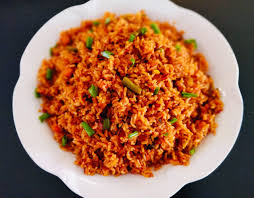
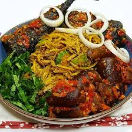

Discover popular local dishes!
Explore dishes loved by locals and popular restaurants.
View Our Featured restaurants
Jollof Rice

Suya


Explore dishes loved by locals and popular restaurants.
View Our Featured restaurants
